|
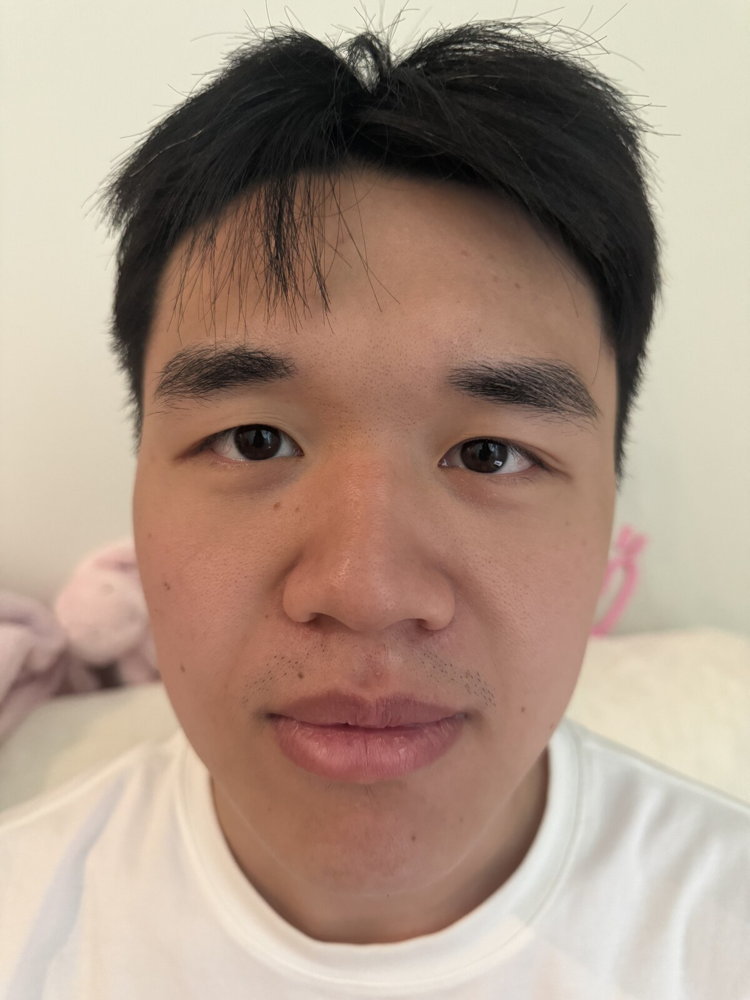 Close, no zoom, 24 mm
|
Far, zoomed in, 227 mm
|
My hypothesis is that when the camera is much closer, features that differ in their distance from the camera, like the nose compared to the cheek, become much more distorted. As the camera moves further away, that difference matters much less, since the nose being slightly closer than the cheek is small compared to the overall distance. The result is much less distortion around the face.
|
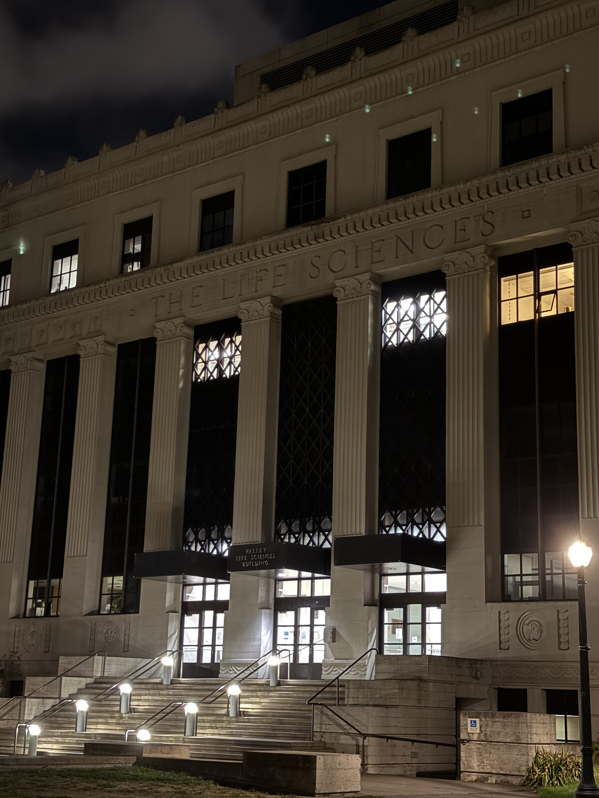 Far, zoomed in, 53 mm
|
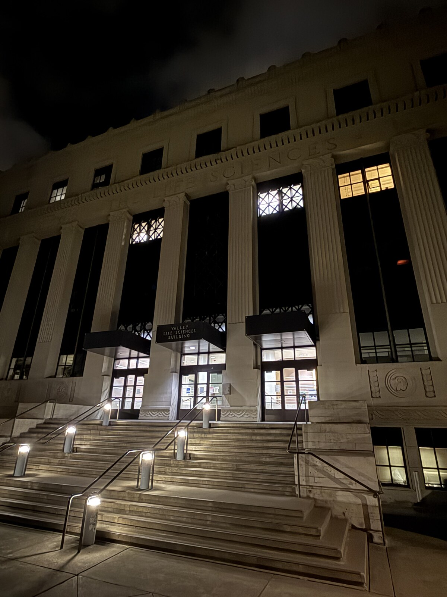 Close, no zoom, 19 mm
|
The building looks flattened in the first picture because from far away we can capture the whole building at once. When we get closer, we are still trying to hold the same field of view, but we no longer have enough distance to do it, so the building ends up looking slightly warped or curvy.
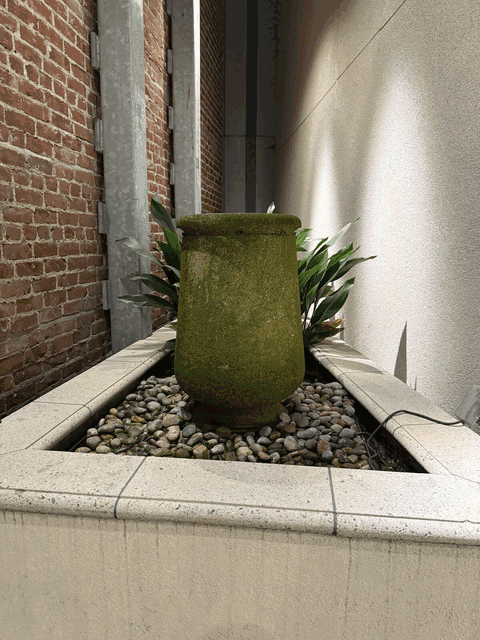
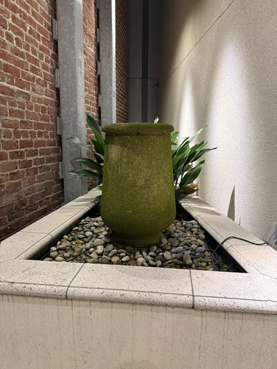 1 (24 mm) |
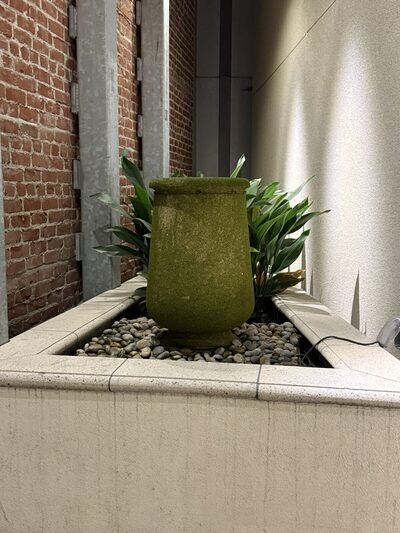 2 |
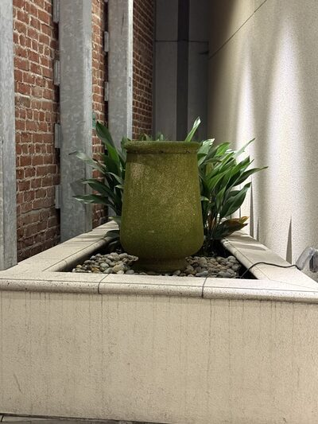 3 (51 mm) |
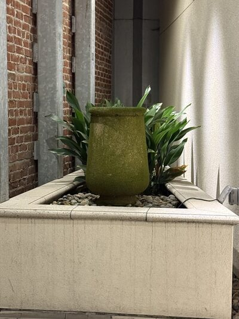 4 |
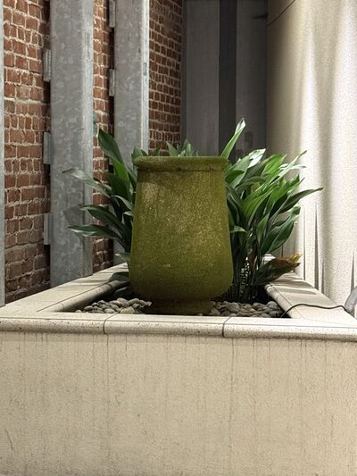 5 |
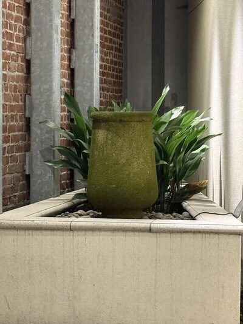 6 (108 mm) |
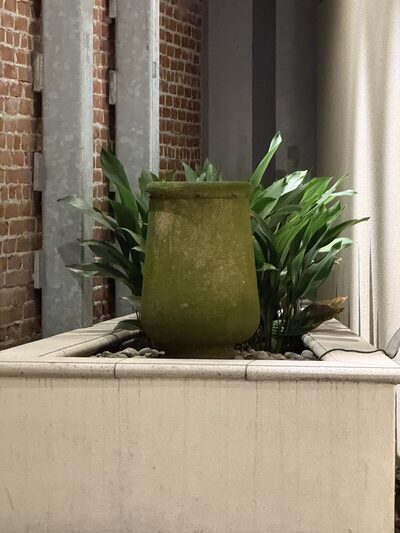 7 |
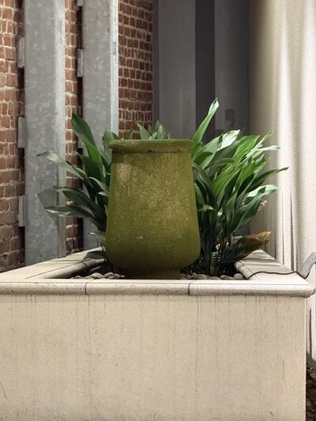 8 |
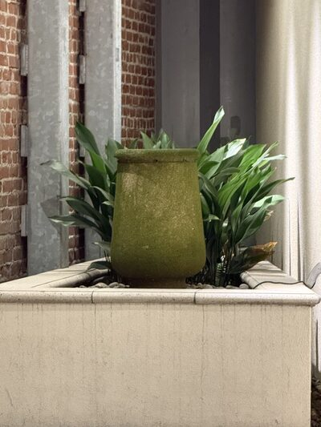 9 |
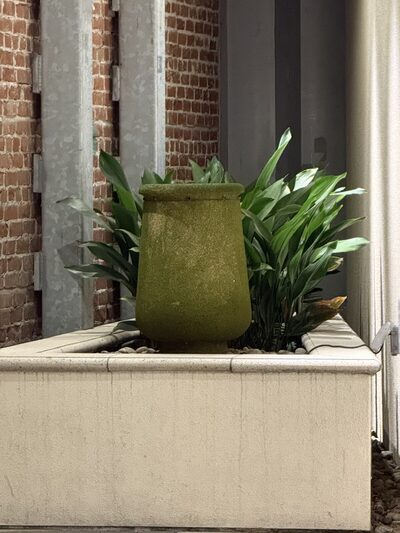 10 (184 mm) |
This is just the steps from Part 1 repeated many times. Each frame backs the camera up a little and zooms in to keep the fountain the same size, so what happened once between the two selfies happens gradually across all ten frames.
{kind=link}
{kind=link}
{kind=link}
{kind=link}
{kind=link}
{kind=link}
{kind=link}
{kind=link}
{kind=link}
{kind=link}